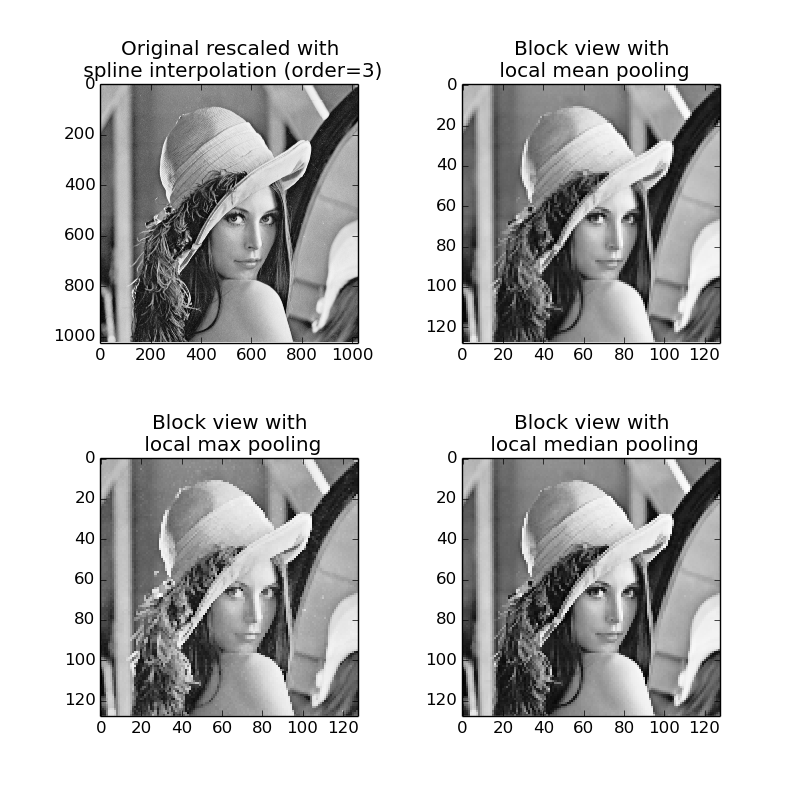

This example illustrates the use of view_as_blocks from skimage.util.shape. Block views can be incredibly useful when one wants to perform local operations on non-overlapping image patches.
We use lena from skimage.data and virtually ‘slice’ it into square blocks. Then, on each block, we either pool the mean, the max or the median value of that block. The results are displayed altogether, along with a spline interpolation of order 3 rescaling of the original lena image.
import numpy as np
from scipy import ndimage as ndi
from matplotlib import pyplot as plt
import matplotlib.cm as cm
from skimage import data
from skimage import color
from skimage.util.shape import view_as_blocks
# -- get `lena` from skimage.data in grayscale
l = color.rgb2gray(data.lena())
# -- size of blocks
block_shape = (4, 4)
# -- see `lena` as a matrix of blocks (of shape
# `block_shape`)
view = view_as_blocks(l, block_shape)
# -- collapse the last two dimensions in one
flatten_view = view.reshape(view.shape[0], view.shape[1], -1)
# -- resampling `lena` by taking either the `mean`,
# the `max` or the `median` value of each blocks.
mean_view = np.mean(flatten_view, axis=2)
max_view = np.max(flatten_view, axis=2)
median_view = np.median(flatten_view, axis=2)
# -- display resampled images
fig, axes = plt.subplots(2, 2, figsize=(8, 8))
ax0, ax1, ax2, ax3 = axes.ravel()
ax0.set_title("Original rescaled with\n spline interpolation (order=3)")
l_resized = ndi.zoom(l, 2, order=3)
ax0.imshow(l_resized, cmap=cm.Greys_r)
ax1.set_title("Block view with\n local mean pooling")
ax1.imshow(mean_view, cmap=cm.Greys_r)
ax2.set_title("Block view with\n local max pooling")
ax2.imshow(max_view, cmap=cm.Greys_r)
ax3.set_title("Block view with\n local median pooling")
ax3.imshow(median_view, cmap=cm.Greys_r)
plt.subplots_adjust(hspace=0.4, wspace=0.4)
plt.show()
Python source code: download (generated using skimage 0.9.0)